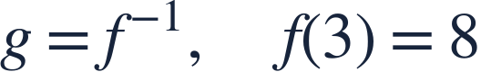
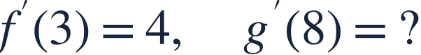
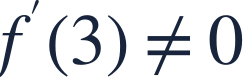
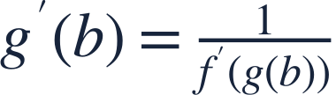
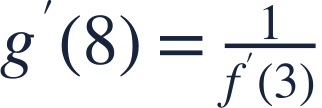
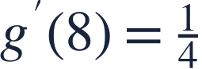
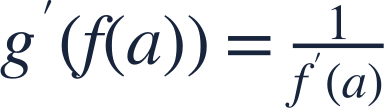
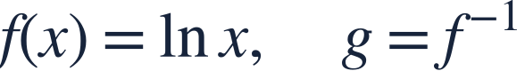

Inverse function derivatives
역함수 미분


An inverse function reverses inputs and outputs, including their local rates.
역함수는 입력과 출력을 바꾸며 국소 변화율도 역수 관계가 됩니다.


An inverse function reverses inputs and outputs, including their local rates.
역함수는 입력과 출력을 바꾸며 국소 변화율도 역수 관계가 됩니다.

Assume f has a differentiable local inverse and a nonzero derivative at 3.
f가 미분가능한 국소 역함수를 가지며 3에서 도함수가 0이 아니라고 합시다.

The inverse slope at output 8 uses the original slope at input 3.
역함수의 입력 8에서는 원래 함수의 입력 3에서의 기울기를 씁니다.
First find the original input that produced 8.
먼저 출력 8을 만든 원래 입력을 찾습니다.

Take the reciprocal at the matched original input.
대응하는 원래 입력에서 기울기의 역수를 구합니다.

A steeper original graph corresponds to a flatter inverse graph.
원래 그래프의 큰 기울기는 역함수의 작은 기울기에 대응합니다.

Do not use f′(8); 8 is the output of f in this question.
f′(8)을 쓰지 마세요. 이 문제에서 8은 f의 출력입니다.

Find g′(ln 5).
g′(ln 5)를 구하세요.